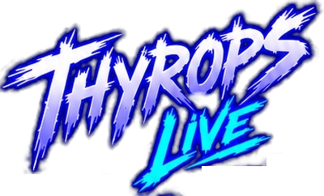

Gerar áudio
Escreva um texto e ouça com a voz escolhida. A geração usa os créditos da sua conta no Fish Audio.
Histórico
Os áudios gerados aparecem aqui.

Escreva um texto e ouça com a voz escolhida. A geração usa os créditos da sua conta no Fish Audio.